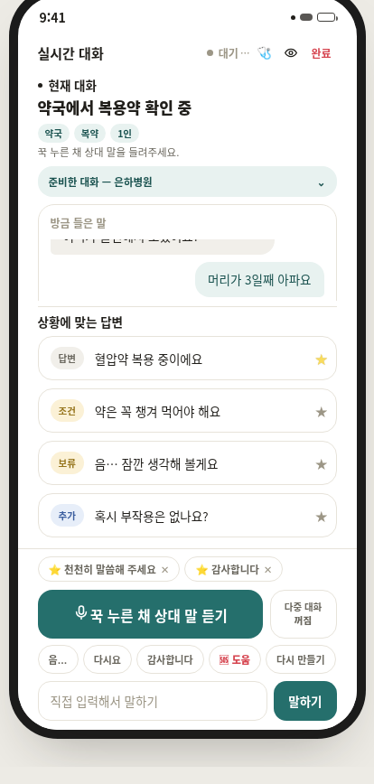

주변 대화를 이해하는 생성형 AAC에서, 모델의 도움을 늘리면서도 사용자의 발화·거절·수리 권리를 어떻게 보존할 수 있는가?
현재 답은 작동하는 프로토타입과 내부 비교 기록입니다. 실제 사용 효과는 다음 버전에서 검증할 과제로 남겼습니다.
개화 · Gaehwa AAC
문제 정의부터 모델 선택, 실시간 추론 파이프라인, 정책 기반 후보 생성, 웹 프로토타입과 평가 하네스까지 직접 구축했습니다. 작동하는 데모에서 멈추지 않고 실패 경계를 다시 감사해 다음 제품 설계까지 정리했습니다.
01 · Project story
주변 대화를 따라가기 어려운 순간에 사용자가 직접 고를 문장 후보를 빠르게 준비하는 문제에서 출발했습니다. 아이디어를 실제 앱으로 만들면서 모델 선택, 화자 판정, 후보 정책과 지연을 하나씩 해결했고, 완성 후에는 코드를 다시 뜯어보며 다음 버전에서 고칠 문제까지 정리했습니다.
현재 답은 작동하는 프로토타입과 내부 비교 기록입니다. 실제 사용 효과는 다음 버전에서 검증할 과제로 남겼습니다.
What I built
기반모델 가중치를 새로 사전학습한 프로젝트는 아닙니다. 대신 기존 모델이 사용자의 말이 되기 전에 무엇을 추정하고, 어떤 행동을 생성해도 되며, 언제 보류해야 하는지를 제품 코드와 평가 규칙으로 직접 모델링했습니다.
상대의 마지막 발화와 사용자의 가능한 응답을 한 쌍으로 보고, 빠른 답변뿐 아니라 확인·조건·거절·보류가 함께 필요한 문제로 정의했습니다.
근거 화행 분류, 행위별 응답 계획, 거절·보류 슬롯 정책
Whisper·A.X·ERes2Net을 선택·통합하고, 화자 임베딩 3종 비교와 LLM A/B 기록을 근거로 기본 모델과 0.50/0.08 화자 게이트를 정했습니다.
근거 10화자·200발화 벤치마크, Kanana 8B 153/290 기각 기록
WH·YN·제안·평서 화행, 행위별 여섯 슬롯, 최대 네 후보와 거절·보류 자리를 코드가 먼저 정하도록 만들었습니다.
근거 policy.yaml, 프롬프트 컴파일러, 라인 파서와 품질 필터
3초 프리롤, 메모리 디코딩, VAD, STT, 세션 화자 판정, 로컬 LLM, NDJSON 후보 스트리밍과 브라우저 TTS를 하나의 런타임으로 연결했습니다.
근거 listen/candidates 파이프라인, GPU·CPU 폴백, 사용자 승인 게이트
서버 없는 단위 테스트와 76개 합성 텍스트 시나리오로 후보 수, 말투, 거절권, 목적과 일부 모순을 반복 검사하고 모델 기각 결과도 기록했습니다.
근거 tests/, eval/golden.json, 실행·모델·정책 해시 기록
후보는 사용자가 선택한 뒤에만 발화되며 오디오는 메모리 파이프로 처리하고 화자 임베딩은 세션 클러스터로 유지했습니다.
근거 선택 후 TTS, 인메모리 ffmpeg, localStorage 화이트리스트
정확한 구현 범위: foundation model 사전학습·파인튜닝, 자체 TTS, RAG는 수행하지 않았습니다. C2의 내부 캘리브레이션은 현재 감사에서 재실행하지 않았고, C6 역시 마이크 수명주기·원격 보안·키보드/스위치 접근 결함이 남아 있어 완전한 온디바이스·프라이버시·접근성 준수로 일반화하지 않습니다.

02 · What I shipped
현재 데모는 오디오를 짧은 구간으로 처리하고, 상대 발화의 화행과 사용자 맥락에 맞는 후보를 스트리밍합니다. 모델이 임의로 발화하지 않고 사용자의 선택이 마지막 게이트가 되는 구조입니다.
3초 프리롤과 VAD로 홀드 구간 주변의 오디오를 처리합니다. 감사에서 마이크 수명주기 결함을 확인했으며 아직 보완 전입니다.
ASR, 세션 화자 임베딩, 코드 기반 응답 계획을 조합해 그 턴에 가능한 행동을 먼저 정합니다.
답변만 밀어붙이지 않고 보류·거절·확인 같은 선택권을 정책 계층에서 보존합니다.
후보, 즐겨찾기, 직접 입력은 사용자가 선택한 뒤 브라우저 TTS 또는 큰 글자 화면으로 전달됩니다.
03 · How I built it
개화는 기반모델 가중치를 새로 사전학습하거나 파인튜닝했다고 주장하지 않습니다. 대신 음성·화자·언어 모델을 AAC에 맞게 선택하고 캘리브레이션한 뒤, 무엇을 생성해도 되는지 LLM 전후에서 통제하는 실시간 추론 시스템을 직접 설계·구현했습니다.
원천 가중치를 새로 학습한 것은 아니지만, 각 모델을 외부 API에 맡기지 않고 자가 호스팅 추론 경로에 통합하고 실제 후보 품질에 맞춰 선택했습니다.
3초 프리롤을 포함한 오디오를 메모리 경로로 16 kHz 단일 채널 신호로 변환합니다. 30 ms 프레임의 RMS, 하한 0.006과 30분위수×1.5를 이용하고 0.55초 무음을 발화 경계로 삼아 조각 양끝에 0.25초를 보탭니다. 신경망 VAD나 중첩 화자 분리는 아닙니다.
한국어·beam 1로 추론하며 CUDA에서는 int8_float16, GPU 적재 실패 시 CPU int8·8스레드 경로로 내려갑니다. 1.2초 미만 조각에서 Whisper가 반복적으로 만드는 알려진 환각 문구를 별도 규칙으로 제거합니다.
L2 정규화한 임베딩의 코사인 유사도 0.50과 1·2위 차이 0.08을 함께 통과해야 화자를 확정합니다. 0.8초 미만은 추정, 애매한 구간은 미확인으로 남기며 최대 여섯 개 세션 클러스터만 유지합니다. 사람의 신원을 식별하는 모델은 아닙니다.
상대의 마지막 발화를 WH질문·예/아니오 질문·제안·평서로 분류하고, 코드가 먼저 여섯 슬롯의 순서를 정합니다. 예컨대 제안에는 수락·거절·조건을, 사실 질문에는 답변·보류·확인을 배치합니다. LLM이 후보 종류부터 마음대로 만들지 못하게 하는 핵심 정책 계층입니다.
사용자 사실·선호·개인 사전·말투 예시, 대화 목적, 반드시 말하거나 물을 항목, 답변 대상과 최근 8턴을 조립합니다. 문맥에 맞는 한 개의 user/assistant 예시쌍과 현재 화행의 슬롯 템플릿을 함께 넣습니다. 이는 학습이나 파인튜닝이 아닌 코드 기반 프롬프트 조립입니다.
기본 모델은 A.X 4.0 Light 7B Q4_K_M이며 temperature 0.65, top_p 0.9, repeat penalty 1.1, context 2048로 실행합니다. GPU에 상주시켜 콜드스타트를 줄이고 토큰 조각을 실시간으로 전달합니다. 모델 가중치 자체를 개발한 것은 아닙니다.
번호·bullet·영문 라벨 변형을 흡수하고 40자 상한, 직원 역할 말투·민감번호·메타출력·복창·예문 유출·존댓말 불일치 필터를 적용합니다. 유효 후보부터 NDJSON으로 최대 네 개를 보내고 응답 모드에서는 마지막 자리를 거절·보류 경로에 남깁니다. 최종 출력은 사용자가 선택한 뒤에만 실행됩니다.
04 · What I tested
아래는 이번 사이트 작성 중 새로 만든 결과가 아니라, 기존 프로젝트에 남아 있는 모델 선택·캘리브레이션·회귀 기록입니다.
resemblyzer·TitaNet·ERes2Net을 비교했습니다. Zeroth-Korean 10화자·200발화와 Opus 조건에서 같은 화자 평균 0.663, 다른 화자 0.211을 기록했고, ERes2Net의 분리 간격이 비교 모델보다 2.2배 커 기본값으로 채택됐습니다.
Kanana 8B는 기록된 비교 실행에서 153/290 체크에 그쳐 기본 모델에서 제외됐습니다. 모델 크기 대신 실제 후보 정책 적합도를 기준으로 A.X 4.0 Light를 우선 모델로 두었습니다.
후보 수, 거절·보류 슬롯, 직원 말투, 첫 후보 시간과 일부 프로필 모순을 반복 검사합니다. 최신 내부 기록은 1,388/1,392 체크지만 이는 코드 회귀 점수이며 사용자 효과나 제품 정확도가 아닙니다.
증거 경계: 화자 벤치마크는 이번 읽기 전용 감사에서 재현하지 않았고, 합성 회귀는 오디오 입력 0건·모순 패턴 적용 4개 시나리오이며 동일 계열 모델 심판 등의 한계가 있습니다. 실제 AAC 사용자 효과, 실환경 STT·화자 정확도와 종단간 지연은 아직 검증 전입니다.
Technical teardown · Read-only
새 사용자 실험을 한 것은 아닙니다. 구현·문서·실행 결과가 서로 맞는지 확인하고, 잘 만든 부분과 다음 버전에서 고칠 부분을 경계별로 정리했습니다.
05 · What I learned
코드 감사에서 발견된 문제들은 별개의 버그가 아니었습니다. AI·접근성·수집·출력·평가를 끝까지 제약하는 공통 불변식이 없다는 한 구조적 문제가 여러 경계에서 드러난 것이었습니다.
“접근 가능한 방법으로 선택할 수 없는 후보는 기능적으로 존재하지 않는 후보다.”전수 감사에서 도출한 제품 원칙
모델에게 모든 라벨을 채우게 하면 근거가 없는 슬롯을 지어낼 수 있습니다. 그래서 채울 행동은 비LLM 정책이 정하고, 모델의 표현도 허용된 재료로 제한하는 것을 목표로 합니다.
운동장애 사용자가 스위치·키보드·스크린리더로 후보를 고르거나 취소할 수 없다면, “사람이 최종 결정한다”는 원칙도 성립하지 않습니다.
서버나 모델이 멈추면 도움의 수준은 낮아질 수 있습니다. 그러나 직접 입력, 기본 보드, 거절, 정정까지 사라져서는 안 됩니다.
06 · Next version design
코드 감사 뒤에 세운 다음 버전 원칙은 When AI Fails, I Still Speak입니다. 기본 의사소통 경로와 실패 가능한 AI 경로를 분리하고, 두 경로가 같은 사용자 권한을 통과하도록 설계했습니다.
보안 경계에서는 실패 시 닫히고, 의사소통 경로에서는 실패해도 작동합니다.
인증되지 않은 원격 AI는 차단하되 사용자의 로컬 기본 발화까지 차단하지 않는 것이 핵심입니다.
07 · Design guardrails
Agency Floor는 하나의 평균점수가 아닙니다. 치명적 권리 손실을 빠른 속도나 높은 후보 점수로 상쇄하지 못하게 하는 제품·연구 계약입니다. 아래 항목은 제안 단계이며 공동설계와 파일럿에서 수정해야 합니다.
AI·서버·네트워크가 실패해도 기본 의사소통은 남는다.
지원한다고 밝힌 접근 방식마다 발화·취소·수리가 가능하다.
스트리밍이 사용자가 탐색 중인 후보의 위치와 의미를 바꾸지 않는다.
승인 없는 의미 출력은 금지한다. 사전 승인한 저의미 신호만 제한적으로 예외다.
모델이 거절·보류를 지우거나 근거 없는 사실을 채우지 못한다.
선언한 수집 상태 밖에서는 마이크·카메라 트랙이 종료된다.
무권한 웹·사용자가 오디오·모델·기억에 접근하지 못한다.
로컬·원격 처리 위치와 실패 전환을 숨기지 않는다.
선택은 선호 신호일 뿐 사실·동의·자동발화 권한의 증거가 아니다.
오류·지연·평가 조건을 숨기거나 유리한 수치로 재해석하지 않는다.
08 · Failure modes for vNext
“서버 연결 실패”로 앱 전체를 막지 않는 것이 목표입니다. 여러 장애가 겹치면 가능한 기능의 교집합으로 내려가되, 직접 말하고 거절하고 고치는 권한은 유지하도록 설계합니다.
| 상태 | 잃는 기능 | 반드시 남는 기능 | 사용자 안내 |
|---|---|---|---|
| S0 · Full Local | 없음 | 전체 로컬 AI와 기본 AAC | 로컬 AI 사용 중 |
| S1 · No Turn/Speaker | 자동 화자·수신자 추정 | 수동 상대 지정, 후보, 직접 입력 | 대화 상대를 직접 선택해 주세요 |
| S2 · No LLM | 자유 생성 | 템플릿, 저장 표현, 거절·보류·수리 | AI 후보 없이 기본 표현을 사용합니다 |
| S3 · No ASR | 주변 발화 자동 전사 | 수동 맥락, 기본 보드, 직접 입력 | 듣기 기능을 사용할 수 없습니다 |
| S4 · No TTS | 합성음성 | 파트너용 큰 글자와 시각 카드 | 음성 대신 화면으로 보여 줍니다 |
| S5 · Privacy Paused | 센서·학습·기억 갱신 | 직접 입력, 기본 보드, 허용된 출력 | 듣기와 학습을 일시 중지했습니다 |
이 상태기계는 목표 설계입니다. 현재 프로토타입에서 모두 구현·검증됐다는 뜻이 아닙니다.
09 · Next bets
기능을 더 붙이는 백로그 대신, 현재 구현과 시행착오에서 다음 제품 가설을 뽑았습니다. 각 아이디어를 가설·비교 조건·평가지표로 바꿔 실제 발화권과 저자성을 개선하는지 확인할 계획입니다.
다음 제품 가설: NEXT 1–4는 실험 설계까지만 정리했으며 아직 수행된 결과가 아닙니다. 실제 AAC 당사자와의 공동설계, 윤리 검토, 접근 방식별 모집·층화가 선행돼야 합니다.
STT·화자 임베딩·7B LLM을 선택·캘리브레이션하고, 화행 정책·프롬프트·스트리밍 파서·사용자 게이트와 내부 평가 하네스를 구현했습니다.
후보 정책, 접근성, 수집 수명주기, 오류 경계와 평가 체계를 읽기 전용으로 감사하고 P0 Agency Floor를 설계했습니다. 발견 결함의 수정·재검증은 이 단계에 포함하지 않았습니다.
Action Bus, 기본 보드, 직접 입력, 취소·정정, 키보드·1·2스위치·스크린리더 접근을 먼저 검증합니다.
LLM·ASR·화자·TTS·네트워크·인증 실패를 주입하고 NDJSON 계약, 후보 출처, 저하 전환과 종단간 지연을 측정합니다.
의도하지 않은 대리발화(UAO), 발언 기회 손실, 의미 전달, 저자감과 접근 비용을 실제 보조기술 사용자별로 층화해 평가합니다.
소형 로컬 모델의 품질·지연·메모리·에너지 Pareto frontier를 확인한 뒤, 동의와 삭제가 가능한 제한적 현장 연구로 확장합니다.
10 · Reflection & limits
모델 선택은 출발점이었고, 제품의 신뢰성은 정책·상태·접근성·실패 처리에서 결정됐습니다. 성공한 데모와 다음 버전 아이디어 사이의 경계는 아래처럼 남깁니다.
읽기 전용 코드 감사와 연구 설계만 완료했습니다. 확인된 결함을 수정하거나 수정본을 재검증한 상태가 아닙니다.
실제 당사자의 속도·참여·저자성이 개선됐다는 사용자 연구를 아직 수행하지 않았습니다.
WCAG 참고 설계와 실제 스위치·스크린리더 검증은 다릅니다. 현재 제품의 준수를 주장하지 않습니다.
열 개 불변식과 생존율은 공동설계·파일럿에서 타당화해야 할 연구 가설입니다.
현재 공개 구조를 완전한 온디바이스 또는 무중단 서비스로 표현하지 않습니다.
Design references
신규성은 “AAC에 LLM을 썼다”가 아니라, 기존 연구 위에서 접근성과 실패 상태까지 주체성의 문제로 연결하는 데 둡니다.